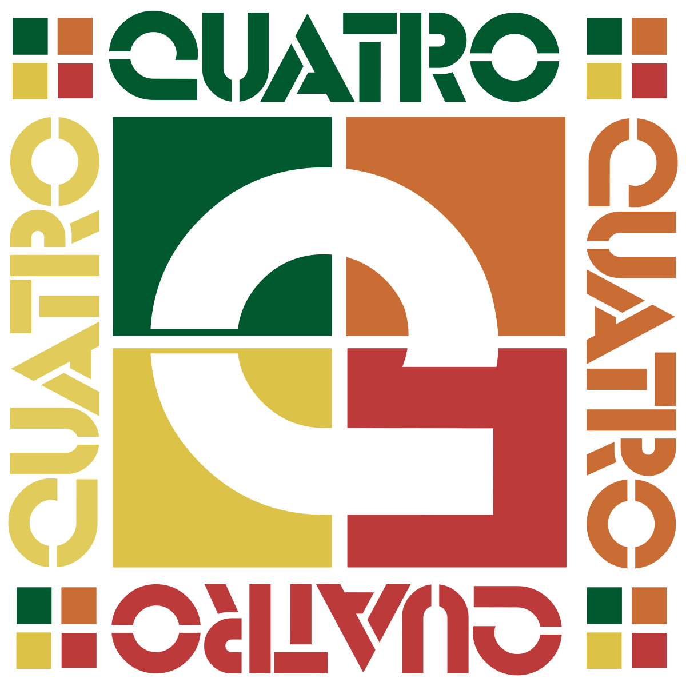
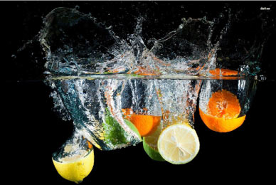
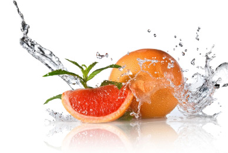
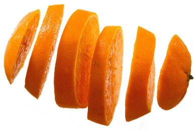
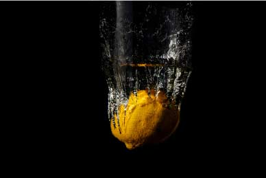
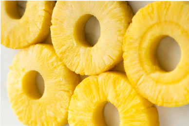

Quatro
Quarto is a soda drink that existed in the 80s, from 1982 to 1989. It was created by Coca Cola in the British marketing, targeting a younger demographic with the branding of being the drink of the “future”, along with the futuristic theme commercial that aired in 1985.
Right now, Quatro can be still found in South America with a modification to a grapefruit soda. The 4 in Quatro represents the taste and ingredients of the drink ie. grapefruit, orange, lemon, and pineapple.
We are proud to present a reincarnated and rebranded Quatro formulated for a better and healthier you, while also staying true to its its origin of its fruity flavours.
We created a futuristic drink that is vegan friendly, has natural ingredients and rejuvinates the body in more ways than one..
Quatro Grapefruit
Grapefruit which has a high probiotic content in itself was created with probiotic supplements which helps the body maintain a healthy community of microorganisms.
Quatro Orange
Contains antioxidants that help protect your body and reduce inflammation while supporting your immune system and reduces DNA damage and may also help reduce the risk for diseases like cancer..
Quatro Lemon
It contains live microorganisms that can help improve gut health and immunity.
Quatro Pineapple
Contains electrolytes that help with energy, metabolism, mood and even makes your skin glow!
Along with its vibrant colours Quatro hydrates and regulates the body with its natural ingredients. It is the drink for people of all walks of life, ages and genders. Its refreshing flavours are top tier, made with quality natural, vegan friendly ingredients. In recreating Quatro we hope to build a community that is healthier and brand that will stand the test of time.